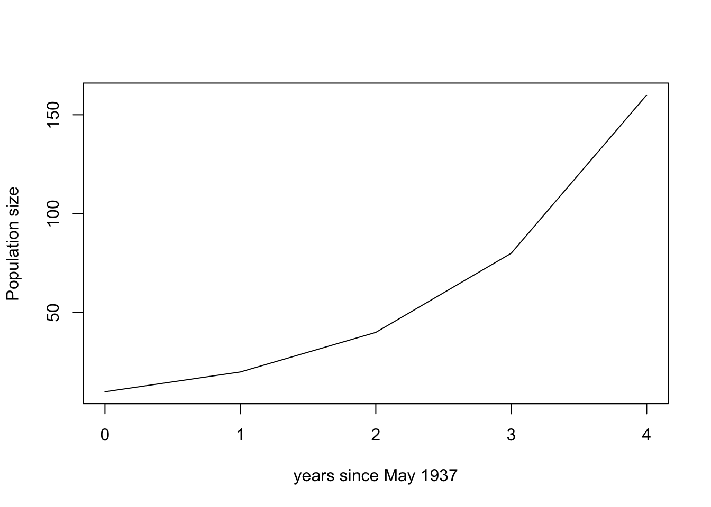
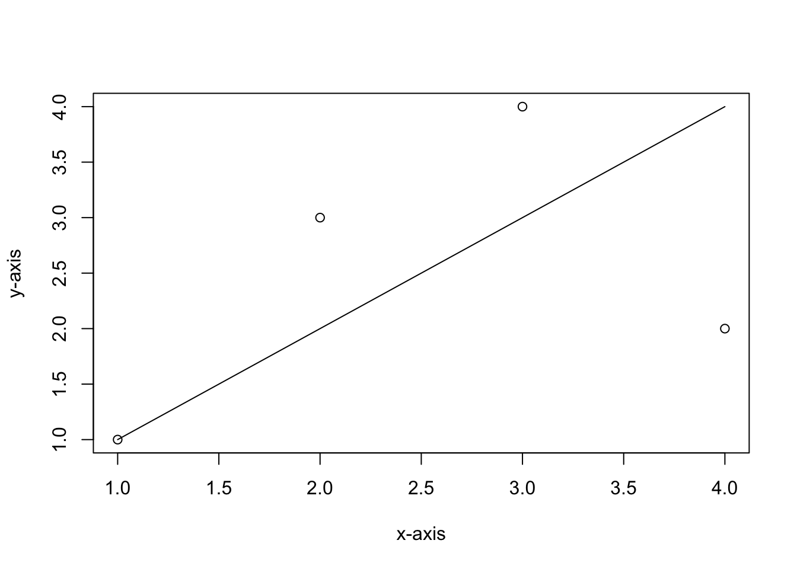
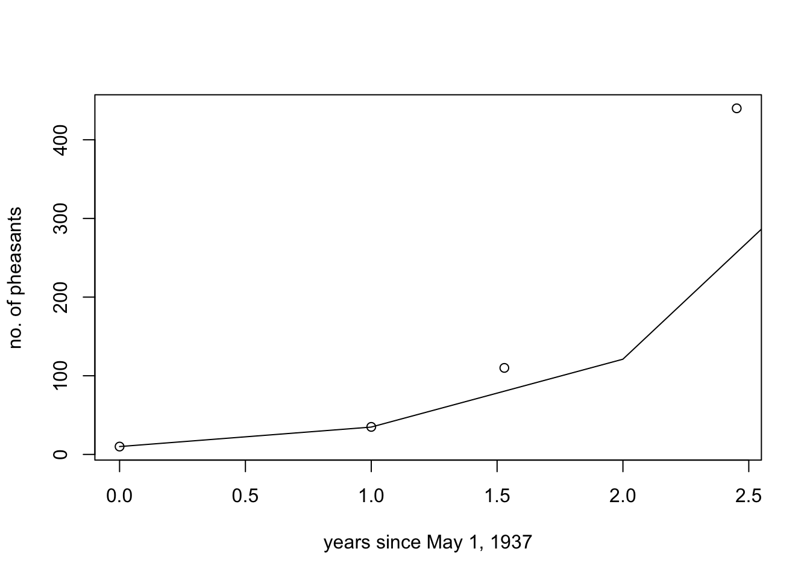

7 Thurs Sept 24: Protection Island 3
Here is some additional information also taken from: Newcomb, HR. 1940. Ring-necked pheasant studies on Protection Island in the Strait of Juan de Fuca, Washington. MS thesis. Oregon State University.
- Pheasant chicks are born during the summer.
- In May 1937, 10 pheasants were introduced to the island. Before the next breeding season there were 35.
- November 10, 1938 a census estimated 110 pheasants.
- October 13, 1939 a census estimated 400 pheasants.
- Between the 1938 and 1939 censuses, Newcomb observed that 17 adult birds died.
- During the 1938 nesting season there were 5.86 eggs/nest. 83.57% of eggs hatched.
- During the 1939 nesting season there were 8.73 eggs/nest. 64.58% hatched.
- During the 1939 nesting season: Average number of chicks per clutch was 6.93.\(^1\)
- You can assume the sex ratio is 50:50 male to female. Pheasants are a sexually reproducing species.
\(^1\) Note that g. and h. appear to be contradictory.
7.1 Questions
Let \(d\) be the fraction of population that dies each year. Estimate \(d\) for the ring-tailed pheasant population on Protection Island? Write down any assumptions you have made. [3 marks]
\(b\) is the per capita number of births each year. What is the value of \(b\)? Write down any assumptions you have made. [3 marks]
Recall that \(\lambda = 1 + b-d\). What is the value of \(\lambda\)? Is this population is expected to grow over time? [2 marks]
Lets assume that the pheasant population on Protection Island grows geoemetrically (i.e. exponentially but for a discrete time model) where the geometric growth rate, \(\lambda\), is the value that you estimated in 3. Lets predict the population size each May beginning with May 1937. Let \(N_0 = 10\) and let \(t\) be the number of years since May 1937. Recall that when a population grows geometrically,
\[N_{t} = N_0 \lambda^t \]
You can use R to do this calculation as follows (you should use your value of \(\lambda\) from question 5, rather than lambda <- 3 as in the example below):
t <-1
N0 <-10
lambda <-3
N0*lambda^tThe result of N0*lambda^t is \(N_{t+1}\), and with \(t=1\) then \(N_{t+1}=N_2\): the population size two years after May 1937. You can change the value of \(t\) and repeat the calculation. Unless you have cleared your workspace it won’t be necessary to re-input \(N_0 = 10\) and \(\lambda = 3\). As such, you can calculate \(N_3\) with the following commands:
t <-2
N0*lambda^tHAND IN
Use R to predict the value of the pheasant population size every year up until May 1940. You only need to hand in the values that you get, not an R Script. [2 marks]
The approach to calculating the pheasant population size in Question 4 is not very organized. In this question, we will learn how to make a data frame, use a for loop, and use the function rbind().
Read Data structures in Quantitative training for biology.
Create a one row dataframe called df:
df <- data.frame(time = 0, popn.size = 10)Query df in your Console to see the data frame you have created. We would like to add successive values of the population size that we calculate to the data frame. To do this we use the rbind() function, which binds rows together.
new.result <- data.frame(time = 1, popn.size = 20)
df <- rbind(df, new.result)Here the rbind() function takes the df dataframe and adds the new.result data frame as a new row onto the bottom. Note that the code above overwrites the value of df: that is, new.result is added to the bottom of the df dataframe (containing only one row), and the result is called df (which now has two rows), and the old dataframe df (with one row) is overwritten. As such, each time you run the command df <- rbind(df, new.result) another row is added to df. Try the following:
new.result <- data.frame(time = 1, popn.size = 20)
df <- rbind(df, new.result)
df <- rbind(df, new.result)
df <- rbind(df, new.result)If you query the value of df you can see that the several rows, all with identical values have been added because we have run the command df <- rbind(df, new.result) multiple times while the value of new.result is unchanged. Now let’s change the value of new.result between each time we run the df <- rbind(df, new.result) command.
new.result <- data.frame(time = 1, popn.size = 20)
df <- rbind(df, new.result)
new.result <- data.frame(time = 2, popn.size = 30)
df <- rbind(df, new.result)Type df into the Console to see the resulting dataframe. Finally, when we do calculations for a sequence of values, it is easier to code this using a for loop.
lambda <- 1.2
N0 <- 10
df <- data.frame(time = 0, popn.size = 10)
for(t in seq(1,4,1)){
val <- N0*lambda^t
new.result <- data.frame(time = t, popn.size = val)
df <- rbind(df, new.result)
}To understand the above code, after copy and pasting it into your Console, and running it by clicking Return, query the value of df: you should see predicted population sizes up until 4 years after May 1937. Now, lets try to understand seq(1,4,1). Let’s learn about the seq() function by trying it out in the Console. What is the result of each of these?
seq(-10,10)
seq(-10,5,0.1)The for loop works by beginning with t equal to the first value of the sequence and stepping through each value until the final value. The code is written so that quantities that depend on t are inside the for loop (i.e., enclosed with in the {} and those that do not depend on t are outside the for loop). Note that val changes for different values of t, new.result changes for different values of t (because new.result has time = t and pop.size = val, where val depends on t). Finally, df also depends on t, because new.result depends on t. In contrast, N0 and lambda do not change with t, so it is more efficient to place the allocated values for these parameters outside of the loop.
We can also plot the results of our calculations:
lambda <- 2
N0 <- 10
df <- data.frame(time = 0, popn.size = 10)
for(t in seq(1,4,1)){
val <- N0*lambda^t
new.result <- data.frame(time = t, popn.size = val)
df <- rbind(df, new.result)
}
plot(df$time, df$popn.size, typ = "l", xlab = "years since May 1937", ylab = "Population size")
If you already have an existing plot you can add new lines using lines(). For example,
plot(seq(1,4), c(1,3,4,2), ylab = "y-axis", xlab = "x-axis")
lines(seq(1,4), seq(1,4))
HAND IN
- Write an R scipt that builds on the file you have previously made protection-island.R. Use the
lines()command to add the predicted population size assuming geometric growth using the commands described in this section. If you have written the code correctly the result should look something like this:

Note that to get years on the x-axis for data from the protection-island.R file, I needed to plot plot(x/365,y) because with plot(x,y) the units on my x-axis were days. Your graph may look slightly different since you may have calculated a slightly different \(\lambda\) value if you made different assumptions to me in questions 1 and 2.
You are to hand in your R Script. See 1.7.2 for more information. [10 marks]